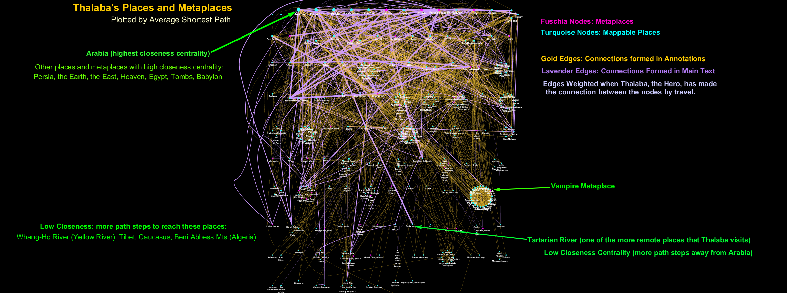
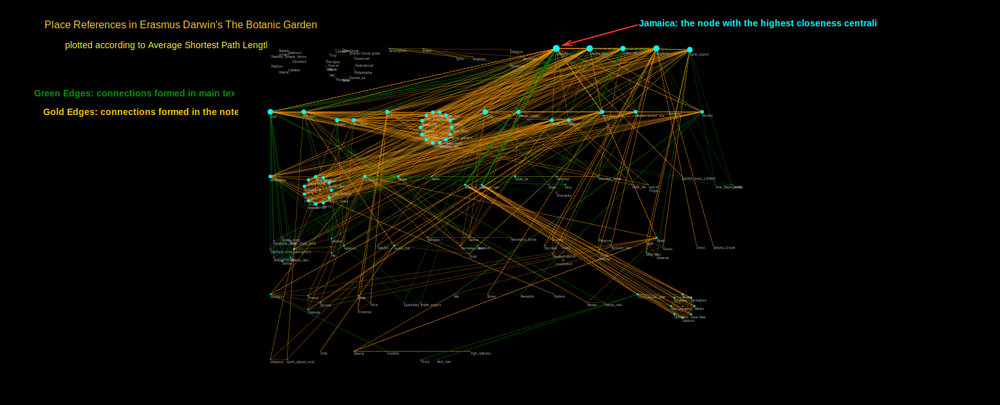
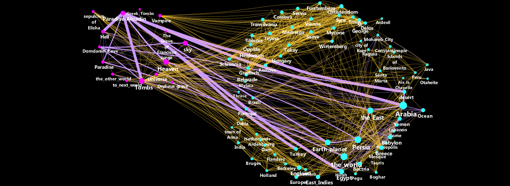

An Overview of this project, with some early plots
I first began plotting network graphs for this project in 2013, before I had finished coding all of the places in Southey's poem. Please read my blog post, "Spectacular Intersections of Place in Robert Southey's Thalaba the Destroyer" first, for an overview of the project, its beginnings, and an orientation to Southey's place-referencing in Thalaba the Destroyer. This page will feature network views of current work in progress.
"Closeness" and "Distance" of Networked Places
What do we mean when we say that one place is “close” to another place? If we think in terms of geography, of course, the distance is something we measure in quantifiable units (kilometers or miles). But if we think in terms of how places are plotted in relation to one another inside an epic poem and its prose annotations, we might think of “close” and “far” in terms of whether two places are frequently referenced together in the same passages of a poem: Perhaps Southey has “plotted” places around the world literally within the plot fabric of his narrative poem, and he has created little neighborhoods or clusters based on places referenced in the annotations of a given unit of text.
I became curious about a statistical measurement in network analysis graphs called “closeness centrality” and its companion measurement, “average shortest path length”. The two concepts are inversely connected, based on the concept of a “path-step” in network analysis: A single path step takes you from one node to another along its shared connecting edge. If a node has six other nodes connected directly to it, those six nodes are the ones that are one path step away from this node. We can study a network by considering how many steps it would take to go from the most centrally connected node to the ones that are “furthest away,” that is, the nodes that it would take the most path steps to reach from most of the other nodes. Thus, the node with the highest “closeness centrality” is the node that has the lowest average shortest path to reach any other node in the network.
Because I am studying places (and metaplaces) in an unusual way by networking them together based on their position in an epic poem, I am interested in how “close” and how “far” these locations are from one another from the perspective of their distance in path steps on the network graph. Here is a view of the places in the poem organized by the network measure of closeness centrality.

Here is a dynamic, interactive version of this network graph, though the nodes and edges are not so distinct as in the static view above. On the web view, change the Visual Style to default-black and click on the droplet icon on the right to change the backgroudn to a dark color or black for best viewing results. This view permits you to explore the network by pulling its nodes and edges, and moving them around to see how they are connected to the rest of the network.
How Does Southey's Thalaba Compare to Erasmus Darwin's The Temple of Nature for Place-Referencing?
At the DH-2015 Conference in Sydney, I presented a preliminary plot of a place network from Erasmus Darwin's The Temple of Nature plotted in the same way, according to closeness centrality, as the Thalaba network plotted above. Here is the network view of places in Temple of Nature for the sake of comparison, which, though heavily footnoted, is visibly less complex in its clusters of place references than Southey's poem:

A dynamic, interactive view of the Botanic Garden network. As before, set the visual style to default view, and click on the droplet on the right to make the background a dark color or black so that you can view the node and edge colors.
Filtering the Thalaba Place-Network: A Closeup of a cluster of places surrounding the "Vampire Cluster"
The largest cluster visible in the graph above represents a clique or neighborhood of nodes all connected by reference in one massive footnote, which contains one of the earliest known references in English literature to vampires and a special "metaplace" associated with them. For more on the Vampire cluster and why it's significant, see my blog on "Spectacular Intersections of Place". Here is a view of the Vampire metaplace and the nodes within two path steps of it, representing a fascinating worldly diversity of places that effectively encircle the planet from this one location in Book 8 of Southey's poem:

Prezi for the 2014 TEI Conference at Northwestern University, 22 October 2014:
 Last modified:
Last modified: